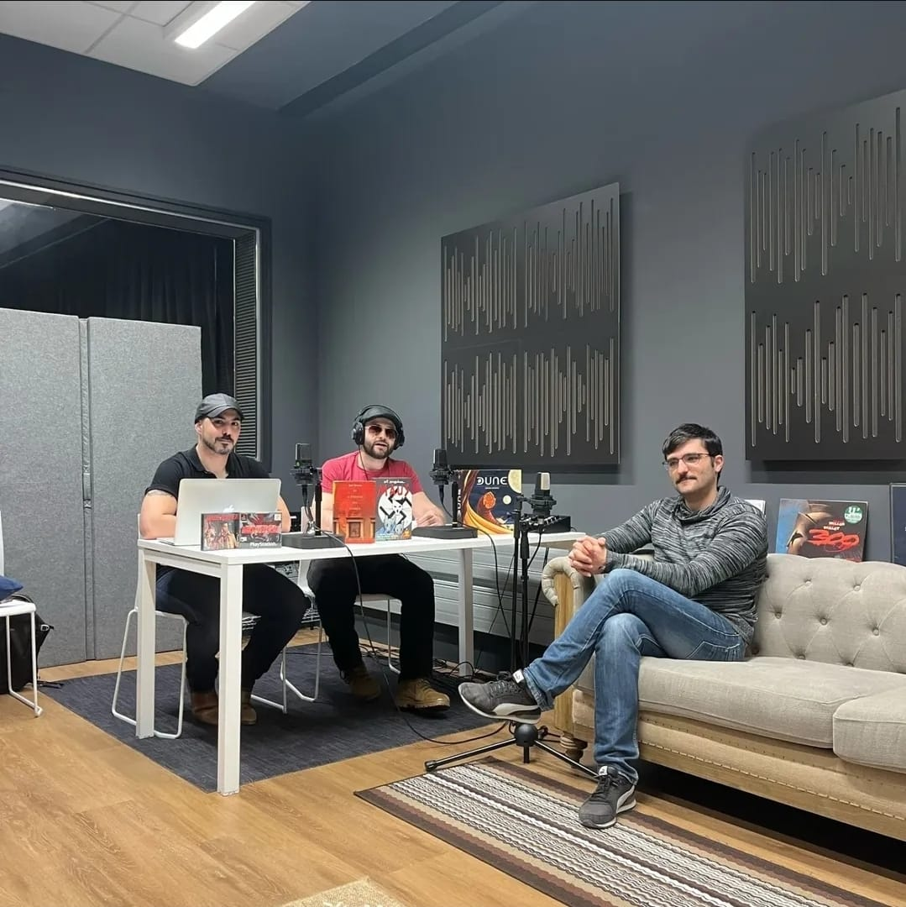
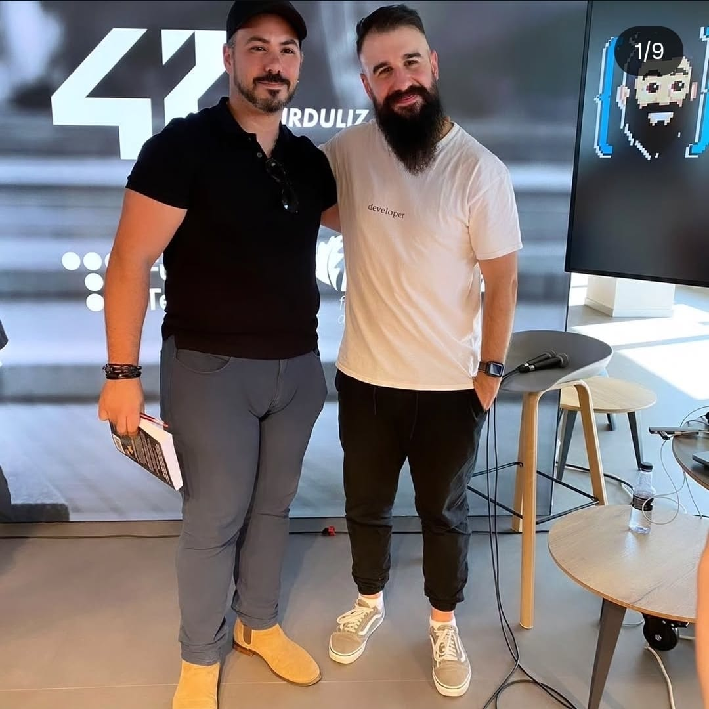
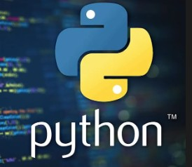
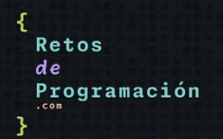
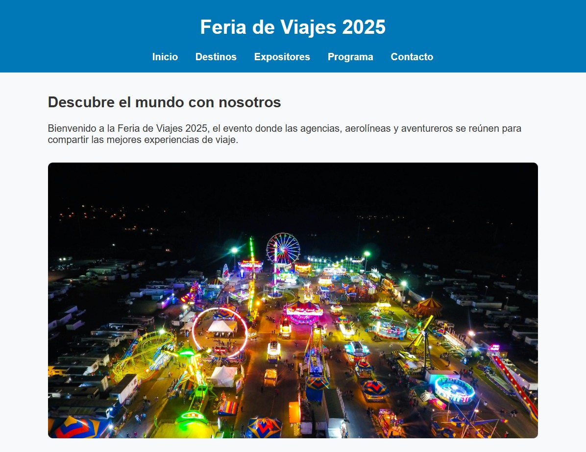
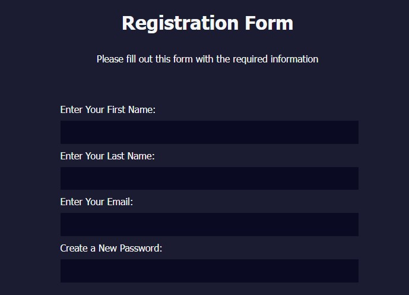
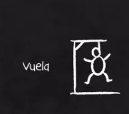

Desarrollador, Técnico de Sistemas y Creador
Especializado en ciberseguridad, programación y tecnología creativa.
Sobre mí


Soy Daniel Jaeger, técnico de sistemas, programador y diseñador de videojuegos. He estudiado ciberseguridad en 42 Urduliz y trabajo en proyectos que combinan tecnología, creatividad y narrativa.
También participo en el podcast Tech Travellers donde hablamos de tecnología, inteligencia artificial, cine, videojuegos y ciencia ficción.
Me apasiona crear herramientas útiles, resolver problemas complejos y explorar la intersección entre tecnología y creatividad.
Tecnologías
Proyectos
Simulador Declaración de la Renta
Aplicación en Python que simula el cálculo de la declaración de la renta teniendo en cuenta ingresos, deducciones e impuestos.
Ver proyectoProyecto Machine Learning
Estudio de precios de telefonía móvil aplicando técnicas de Machine Learning para detectar patrones de mercado.
Ver proyectoConecta 4
Implementación en Python del clásico juego Conecta 4 con lógica completa de juego.
Ver proyecto
Carrera Python
Simulación de carrera entre coche, moto y dragón con obstáculos aleatorios.
Ver proyectoCalculadora Python
Ejercicio clásico de calculadora implementado en Python para practicar lógica y funciones.
Ver proyecto
Retos de Programación
Colección de ejercicios de programación para practicar lógica y algoritmos.
Ver proyecto
Feria de Viajes 2025
Página web creada como práctica de desarrollo web para una feria de turismo.
Ver proyectoWeb Vaciados y Mudanzas
Sitio web corporativo para empresa especializada en vaciados y mudanzas.
Ver proyecto
Formulario HTML & CSS
Formulario web creado para practicar maquetación y estilos.
Ver proyecto
Adivina la Palabra
Juego en Python donde el usuario debe adivinar una palabra en un número limitado de intentos.
Ver proyectoSombrero Seleccionador
Simulación del sombrero seleccionador del universo de Harry Potter.
Ver proyectoContacto
Puedes encontrarme en: